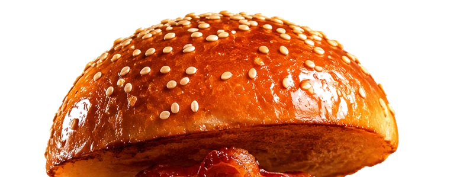
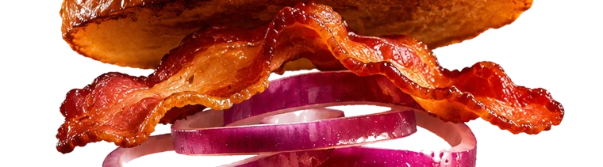
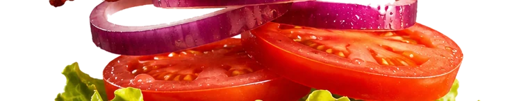
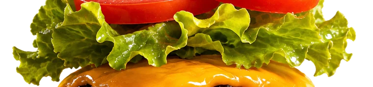
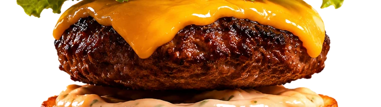
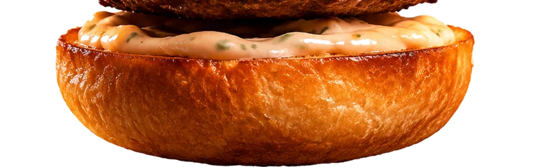

EXPERIÊNCIA BRABOS ● CARUARU
ISSO ÉBRABO.
Não é só um lanche. É cada camada fazendo a diferença.
O SABOR TEM CAMADAS
CADA CAMADA
CONTA.
Uma experiência feita para abrir o apetite.
DO PRIMEIRO AO ÚLTIMO PEDAÇO
O SABOR
É BRABO.






↓ ROLE PARA EXPLORAR01 / 04
UMA EXPERIÊNCIA UXDRIVEN